I'm using the firmware for the dcs-7410.
I chose this firmware because I was told by a friend there is a vulnerability that someone with little experiance could find and exploit.
This is the first time I've attempted firmware reverse engineering.
You will see me do some weird things like not using cd, it's so the terminal looks better for pictures.
After I upzipped it I used binwalk
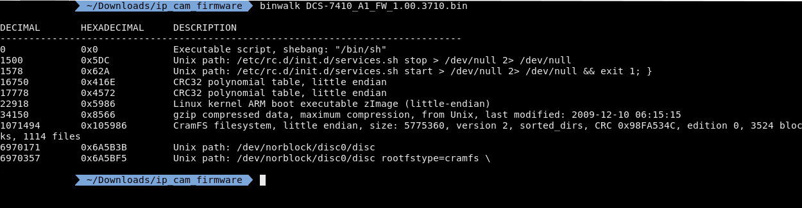
From this you can see a cramfs filesystem. Cramfs is a compressed rom file, which makes sense because you aren't supposed to be able to write to your firmware and it has a pretty good compression ratio.
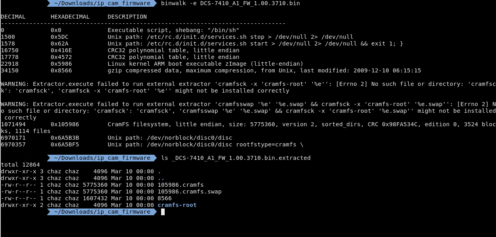
I could've extracted this with dd but binwalk has a flag -e that tries to extract the files in the firmware. I got a few warnings but they don't seem to have actually affected me. Now that I extracted the filesystem I need to mount it in the cramfs-root folder.
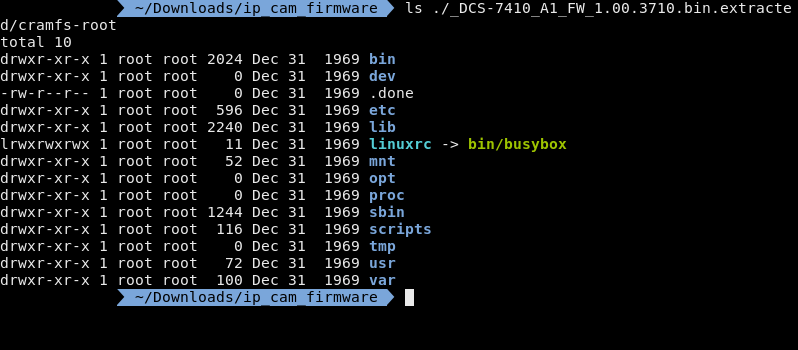
After I mounted the image I need to find the web server and it's config files. Now most web servers are pretty bloated but there are a few that are light enough to be used in embedded systems such as,
Now I've personally seen more lighttpd in my hobby development boards and SOCs, however we can clearly see that busybox is on this system so we should probably look for httpd first.
Normally you could just do a banner grab on the website to get the server but as I dont have the ip cam physically I would need to emulate the cam which I wont do that now but I will later.
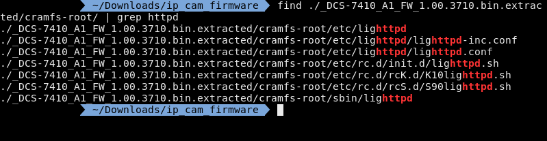
I'm using find instead of ls -R because find will give you the directory the file is in and I'm using grep instead of find -name because find -name is very literal and grep will just match the string.
Now the results are interesting because I found lighttpd instead of httpd even when busybox is used on the camera. this is great for me because I've used lighttpd alot more than httpd or thttpd.
There is nothing interesting in lighttpd.conf but it does include lighttpd-inc.conf
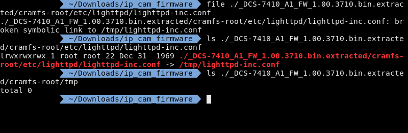
Now when I do a file on lighttpd-inc.conf it says that its a symlink connected to /tmp/lighttpd-inc.conf, I did a ls on it to make it easier to read. however when you ls in the /tmp/ folder there is nothing there.
Now if we go back to the images we can see a swap file, however when I file it says its a filesystem now if I try to mount the image it throws an error. If I take a longer look I can see the filesystem is in big endian, the filesystem on my computer is little endian so thats the issue.
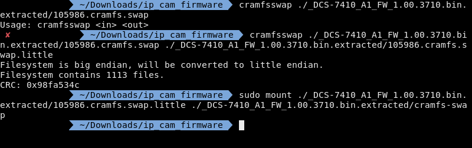
Typically at this point I'd build a python script that would reverse the endianess however, thankfully there is already a tool out there specifically for the cramfs filesystem.
But that /tmp/ is also empty
So clearly I've missed something. I'm going to go back to the original image and go through more of the lighttpd files.
So lets take a look at /etc/rc.d/init.d/lighttpd.sh
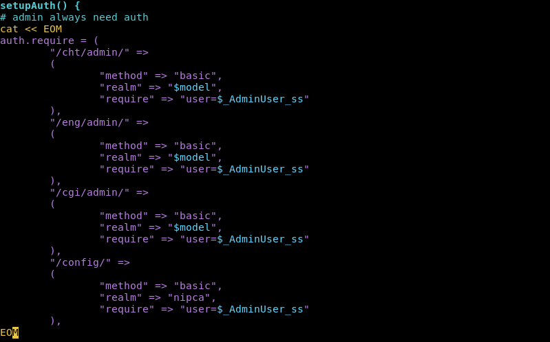
So here we can see what seem to be admin pages.
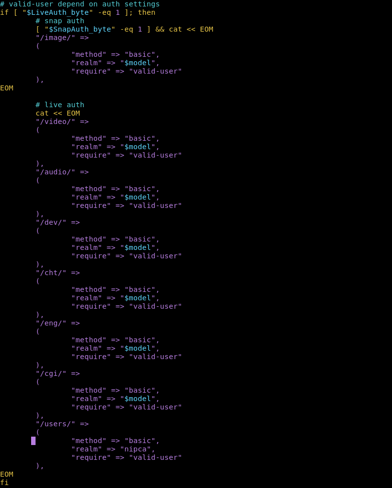
Here we can see the directories that require a login. Now we have to remember these aren't file directories these are web directories.
So /cgi/ wouldnt be in the root filesystem directory it would be in the root webserver directory. Now the root websever directory is usually /www however on this machine its in /var/www
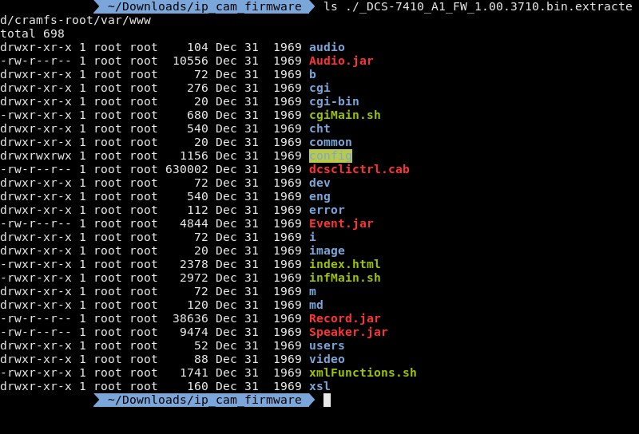
So if we cross reference this ls with the protected directories we can see the following directories:
This leaves the following directories unprotected:
Now the most interesting directory in the unprotected list is /cgi-bin/
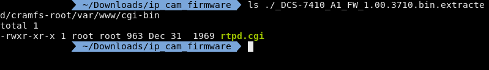
There is a single file in here and thankfully its not compiled so I don't have to decompile a binary.
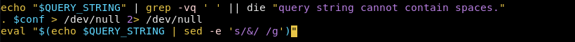
And there it is...
Let me break this down.
So if you look at the last line there is an eval which takes a string and puts it into a shell.
Inside that eval they echo the query string.
This query string is then piped into a sed command.
sed -e 's/&/ /g' will substitute ampersands with spaces.
So to put it all together whatever you put into the query string, as long as you use amps instead of spaces, will be run in a terminal.
So first I need to emulate the ip cam. But I'm just going to emulate the shell environment because I was having issues emulating the entire image.
Now I can't find what CPU, or SOC more likely, this camera runs on but I'm going to make an educated guess and say whatever it is its based on the ARM architecture. (I looked at the opcodes)
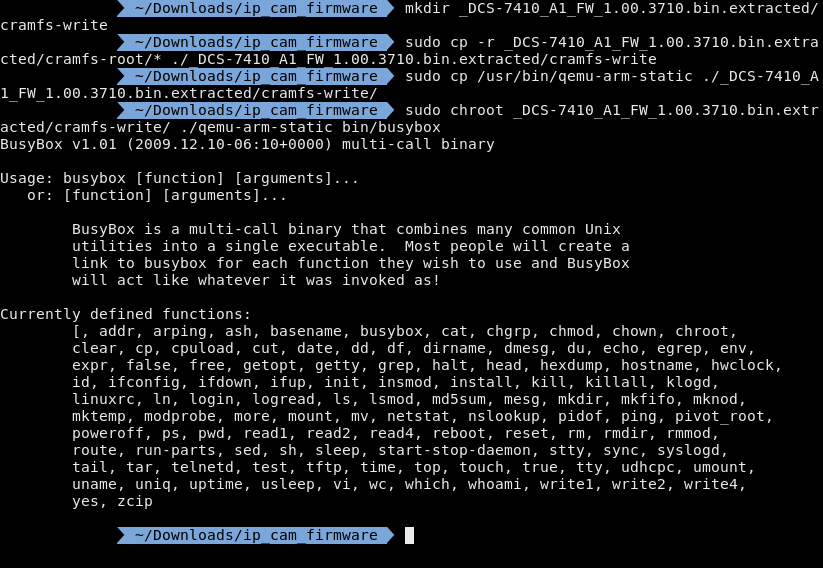
Cramfs is a read-only file system so I made a new directory and copied everything from cramfs-root to cramfs-write.
Then I copied over a qemu arm user environment. I then ran chroot as the qemu arm user and ran busybox.
Now what I can do is jump into the shell. Also as a side note this version of busybox was outdated when this camera came out.
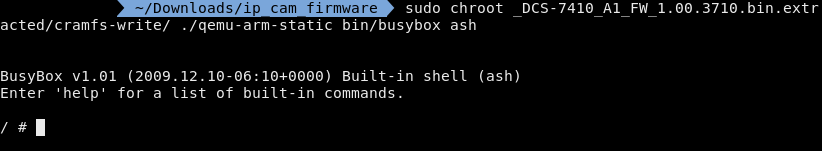
I am getting some funky behavior, probably because I'm not emulating the whole device.
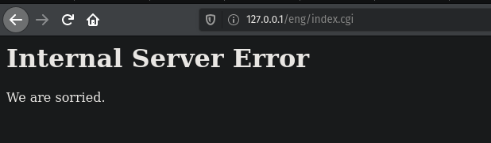
Here I navigated to the injectable file and did an ls /
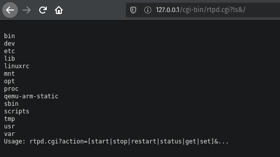
It will return the output to the browser.
So this was the first time I've reverse engineered firmware. I intentionally went with old firmware and D-link because I wanted something easy to start with and old firmware is bound to have vulnerabilities and D-link doesnt have a very good reputation when it comes to security.
I was not expecting the command injection to be that easy. I have also never seen command injection like that outside of CTFs or other labs.
Some things I had difficulty with had mostly to do with the emulation part, I was having issues with qemu so I decided that instead of emulating the whole device it would be easier and quicker to just chroot ash and run lighttpd from there since all I needed was to prove that the command injection would work.